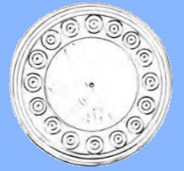
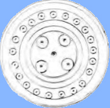
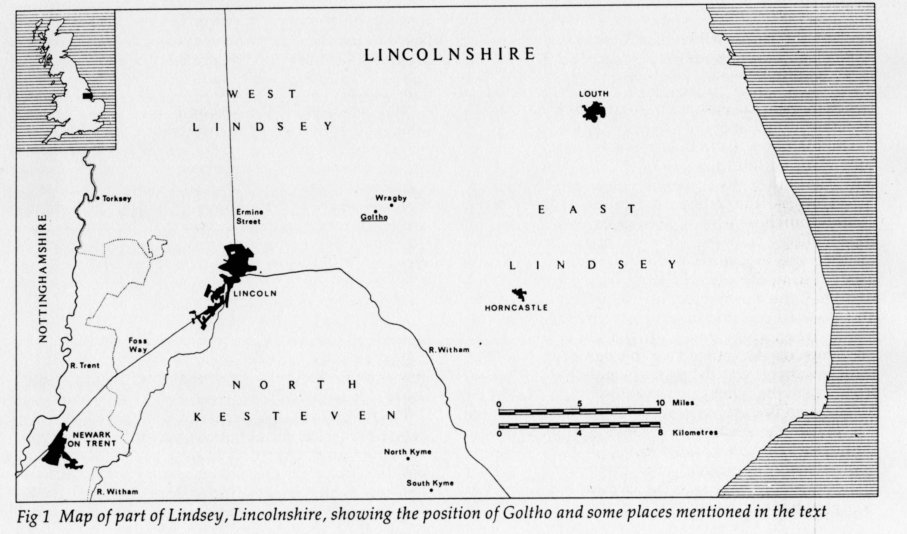
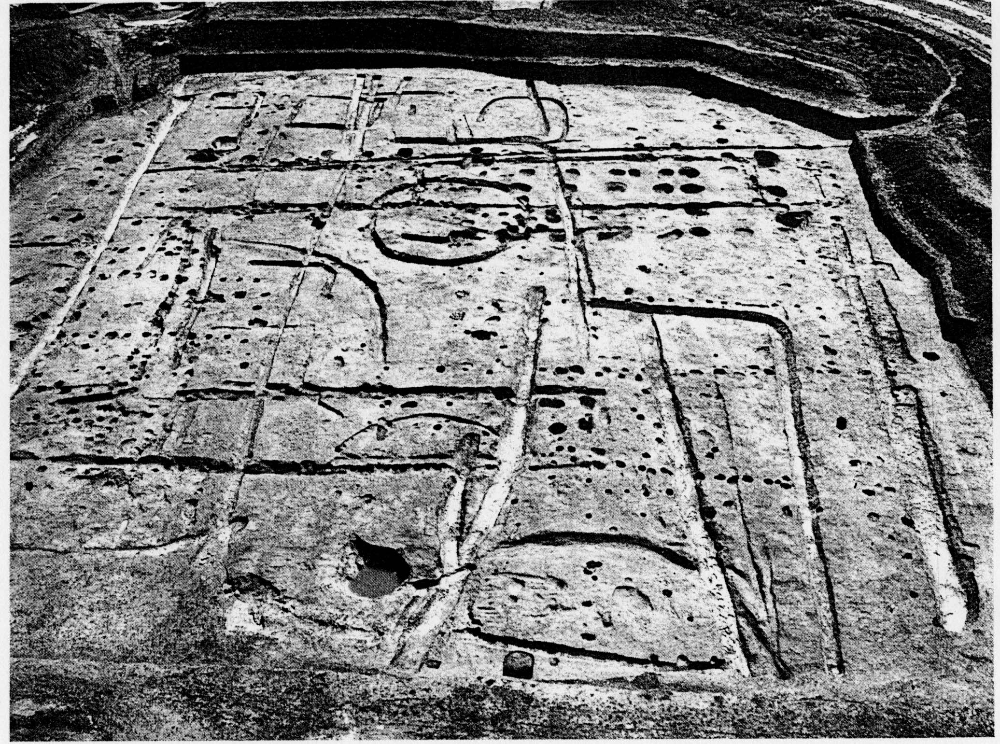

|
 Gaming pieces of bone and antler from Goltho, |
Goltho, 1066-1250 |
 |
The medieval village of Goltho is located in east-central England, in Lincolnshire; it is 9 miles east of the cathedral town of Lincoln. Today, all that remains of the site is a sixteenth-century church; the evidence of medieval buildings is entirely archaeological.

This site had been occupied in the Roman period, but then deserted. It was reoccupied in the middle Anglo-Saxon period, around 800, and c. 850 a manor was built with an associated village. This village/manor was called Bullington (the earliest mention of the name "Golthawe" occurs in 1220-35). The Domesday book in 1086 says that there were three manors in the parish of Bullington; the following entry probably relates to Goltho village:
M. In Bolintone Lambecarl had 3 1/2 bovates of land to geld. There is land for one plough. Colsuan, the earl's man, has one plough there [in demesne], and two villeins and three bordars having half a team, and 10 acres of meadow, and 160 acres of underwood. In the time of King Edward it was worth 20 shillings; now the same amount.
Lambecarl was presumably an Anglo-Saxon landowner of good but not aristocratic standing, but by 1086 the land belonged to Earl Hugh of Chester, a much more important nobleman, given as a fief to his vassal Colsuan. From other sources, we know that the manor of Goltho belonged to the Kyme family from around 1158/66 until the end of the male line in 1339. By the twelfth century, the Kyme family had acquired about 30 knights' fiefs all over England; three were held directly from the king, but the others were held from at least ten different lords; this was one of the largest groups of sub-fiefs in England.
In the Hundred Rolls of 1279, the manor is called "Goltehayt," but the entry is very short, and only says that it was there. After 1339 it passed through the marriage of daughters to the Tailbois family, who owned it until the 16th century.
The manor was rebuilt into a small castle after 1080 (possibly as late as the 1130s), and was used until around 1150 or 1200, when it was abandoned. The village, however, remained on the site until the end of the fourteenth century, after which it was deserted (probably due to the poor yields of the soil after the climatic downturn around 1300).
The site of the village was used for grazing rather than agriculture after its desertion, which is why the materials from the village were relatively well preserved. The site was excavated from 1970-1974 by Guy Beresford. The Anglo-Saxon village and manor The later medieval village houses |
 |
Information and pictures about Goltho are taken from Guy Beresford and J. Geddes, Goltho : the Development of an Early Medieval Manor c. 850-1150 (London: Historic Buildings & Monuments Commission for England, 1987) and Guy Beresford, The Medieval Clay-land Village: Excavations At Goltho and Barton Blount (London: Society for Medieval Archaeology, 1975).